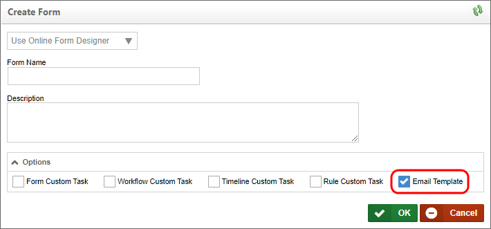
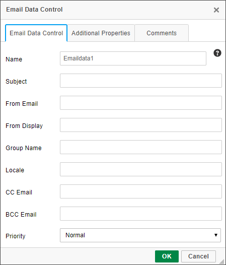
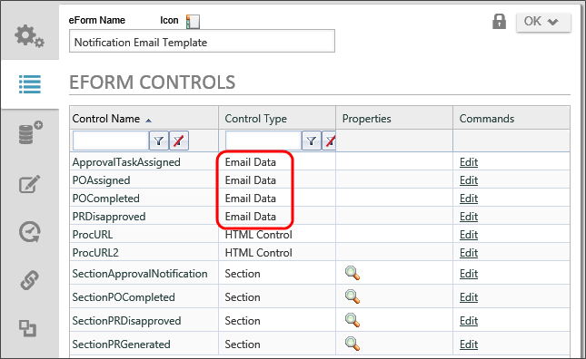
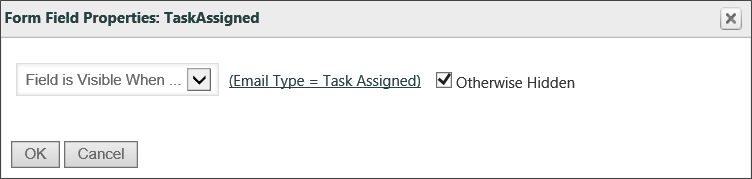

Creating an email template requires creating a new Form definition within Process Director. In the Options section of the Create Form dialog, ensure that you check the Email Template checkbox. If this property is not checked, Process Director will create a normal Form definition, which can't be used as an email template.

You can also use a custom ASCX file for your email template, just like you can when creating a regular Form definition. Simply select the option you desire from the dropdown marked "Online Form Designer". In nearly all use cases, the default choice of the Online Form Designer is the simplest option, but you have the option to create a custom ASCX control in ASP.NET using Visual Studio (assuming you have this license option).
Your email template is now stored in the Content List. You can edit the template by selecting the template to edit and then select the Edit tab. You can make changes to your template in your preferred editor.
Variable substitutions are performed when an email file is processed for a process request. System variables can be added to the email, either by typing them in plain text, or by using the System Variable control. To see the complete list of system variables, please refer to the System Variables guide. Note that not all system variables are available for every event that generates an email.
The Subject, From Email, Mail Priority, From Display, Send As Attachment, Group Name and Cancel Email properties are contained in each email template as properties of the Email Data control.
The Email Data object enables you to customize various aspects of notification emails such as the email subject, reply-to addresses, etc. Inserting the Email Data control produces this object in your Form:
By double-clicking on it, you can open its properties dialog box , shown below, to edit its properties.

For information about this control's properties, please see the EmailData Control topic.
You can add multiple EmailData controls to an email template. Use the Condition Builder to optionally show and hide these by going to the control in the Form properties page and setting a condition on each EmailData tag created. Each tag has a unique ID.

Once you have multiple Email Data objects on the email template, you’ll need to set up conditional visibility of the objects. On the Forms Controls tab of the email template file, you can set conditions of what email data or email sections should be used like this:

This Email Data object will be visible when the email type is “Task Assigned”. There is more about these Email types in the next section, “Email Template Conditional Processing”, below. One more thing to note: when multiple Email Data objects’ conditional statements will evaluate as “true”, then PD will work through the separate Email Data objects in order, and information in properties input boxes will be replaced by non-blank properties boxes of the next Email Data object. If any of the “Cancel Email” boxes are checked in any displayed Email Data objects, the email won't be sent.
There is one email type that is sent when a user's task is completed due to a condition that completes the task without the user's involvement. For example, a task may assigned to a group of users, but be set to complete when the first user in the assigned group completes the task. In this case, the default behavior is for all users to receive the task completion email. Essentially, for any function that causes a user to be marked as "Not Required", all assigned users will receive email notifications that the task is complete. If you don't want this behavior, add an EmailData tag or control to the email template with the "Cancel Email" option set to True. Be sure to place that Email Data control in a section that is visible when the email type is "not needed".
<bpx:EmailData ID="StepName" runat="server" Subject="Subject line" MailPriority="High"
FromEmail="{CREATE_USER, format=email}" FromDisplay="{CREATE_USER}" SendAsAttachment="True"
GroupName="Group" CancelEmail="True">
</bpx:EmailData>
The email templates can optionally contain Section tags that can control what portions of the email should be displayed under different conditions (e.g. value of a form field). You can optionally display any control that has an ID which will display in the list of controls on the Form properties page. Conditional processing allows you to display a type of email to use such as the reminder email type. You can conditionally display controls based on the type of email. The following email types are available in Process Director:
Refer to the chapter on Form Definitions for more information on conditional processing. To test email templates that contain Form tags, upload the email template to Process Director as a Form but marked as an Email Template to have the built-in parser validate the use of your Form tags. This will only allow the email template to be validated; it won't be a valid Form.
The email templates can optionally contain links that allow the user to complete their task. This system tag will add the task URL to the link tag in the HTML email allowing the user to click on it to open in the browser and complete their task.
In the Online Form Designer:
{EMAIL_URL}
In .ascx:
<bpx:HTML ID="ControlName" runat="server" HTMLString="<a href='{EMAIL_URL}'>Click here to view the process</a>">
</bpx:HTML>
This system tag will return the URL that can be placed within an <A> tag on the HTML email.
Email templates can contain links that allow the user to complete their task without having to view a Form.
{EMAIL_RESULT_LINKS, comments=1, confirm=1, separator="<br>", icon=1}
This system tag will return the possible branches to take. It creates an HTML link with the URLs for all of the possible branches in a Workflow or results in a Process Timeline Activity assigned to the user.
|
ARGUMENT |
TYPE |
DEFINITION |
|---|---|---|
|
comments |
true/false(default value) |
The user is prompted to comment if true |
|
Confirm |
true(default value)/false |
The user is required to confirm the task has been completed |
|
Separator |
HTML tags |
characters to separate the list of links |
|
Icon |
true(default)/false |
Optional icons/images from the Workflow branches or Timeline Activity results appear next to each of the links. NOTE: Process Timeline results don't have image icons. |
Possible Branches to Take:
{EMAIL_RESULT_LINKS,comments=1,confirm=1,separator="<br>",icon=1}
This system tag will return a comma separated list of all of the possible results from the current branch in a Workflow or a result in a Process Timeline Activity assigned to the user. This tag is useful for reply options the recipient must use. The next process may be scanning to match text in the sent Email.
Please enter one of these keywords in responding to this Email:
{Email_result_list}
{EmailCompleteLink, text=Approve, comments=1, confirm=1, action=Approve}
This System Tag is a link to a web page allowing their user to complete their task.
Each EmailCompleteLink System Tag with its arguments corresponds to one branch in a Workflow or a result in a Process Timeline Activity. Remember to name this Email as the “Default Email template” in the Workflow or Process Timeline Activity.
|
ARGUMENT |
TYPE |
DEFINITION |
|---|---|---|
|
Text |
string |
text to display on the link (e.g. Approve, Resubmit, Reject) |
|
Comments |
true/false(default value) |
The user is prompted to comment if true |
|
Confirm |
true(default value)/false |
The user is required to confirm the task has been completed |
|
Action |
string |
The Workflow branch name or the Process Timeline Activity result (e.g. Approve, Resubmit, Reject) |
{EmailCompleteLink,text=APPROVE, comments=true, confirm=true, action=APPROVED}
{EmailCompleteLink,text=RESUBMIT, comments=true, confirm=true, action=RESUBMIT}
{EMAIL_COMPLETE_URL, action=Approve, comments=1, confirm=1}
This system tag will return the URL that can be placed within an <A> tag on the HTML email.
|
ARGUMENT |
TYPE |
DEFINITION |
|---|---|---|
|
Text |
string |
text to display on the link (e.g. Approve, Resubmit, Reject) |
|
Comments |
true/false(default value) |
The user is prompted to comment if true |
|
Confirm |
true(default value)/false |
The user is required to confirm the task has been completed |
|
Action |
string |
The Workflow branch name or the Process Timeline Activity result (e.g. Approve, Resubmit, Reject) |
This URL can be used for in Workflow emails. It is used to construct a hotlink back to the originating Workflow.
|
PARAMETER NAME |
DESCRIPTION |
|---|---|
|
forminstid |
The ID of the form instance to display. |
This example will create a hotlink in an ASCX Email template which points back to the Workflow's Form
<bpx:HTML runat="server" HTMLString="<a href='{INTERFACE_URL}wd.aspx?forminstid={FORM_INSTANCE_ID}'> Click Here to View the Form Instance</a>">
</bpx:HTML>
This URL can be used for in Process Timeline emails. It is used to construct a hotlink back to the originating Process Timeline.
|
PARAMETER NAME |
DESCRIPTION |
|---|---|
|
forminstid |
The ID of the form instance to display. |
This example will create a hotlink in an ASCX Email template which points back to the Process Timeline Form
<bpx:HTML runat="server" HTMLString="<a href='{INTERFACE_URL}pd.aspx?forminstid={FORM_INSTANCE_ID}'>
Click Here to View the Form Instance</a>">
</bpx:HTML>
You can use the software simulation below to walk through the process of creating a new email template.